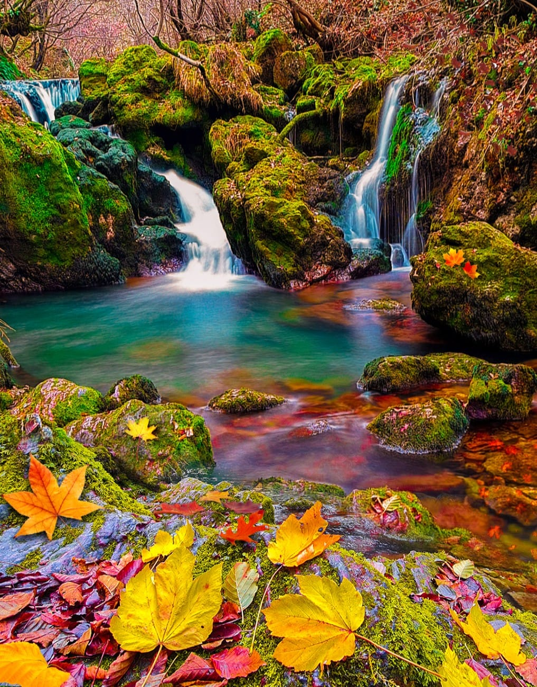
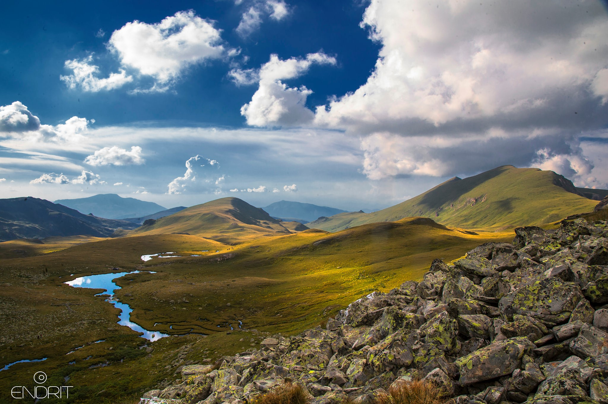
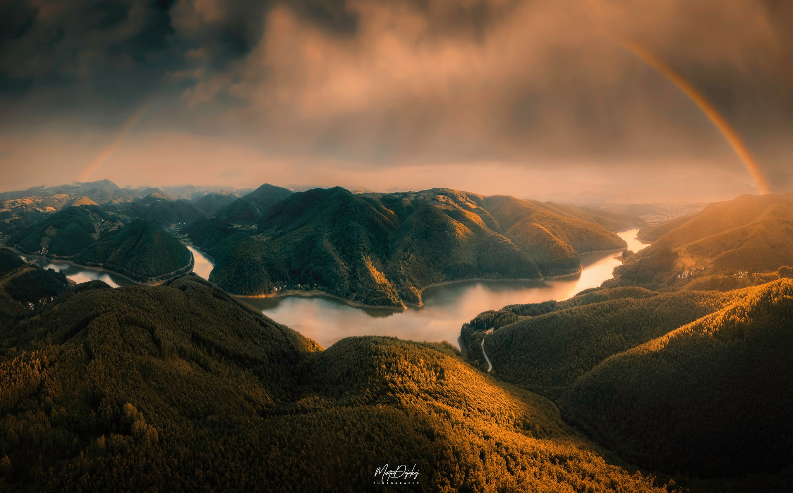
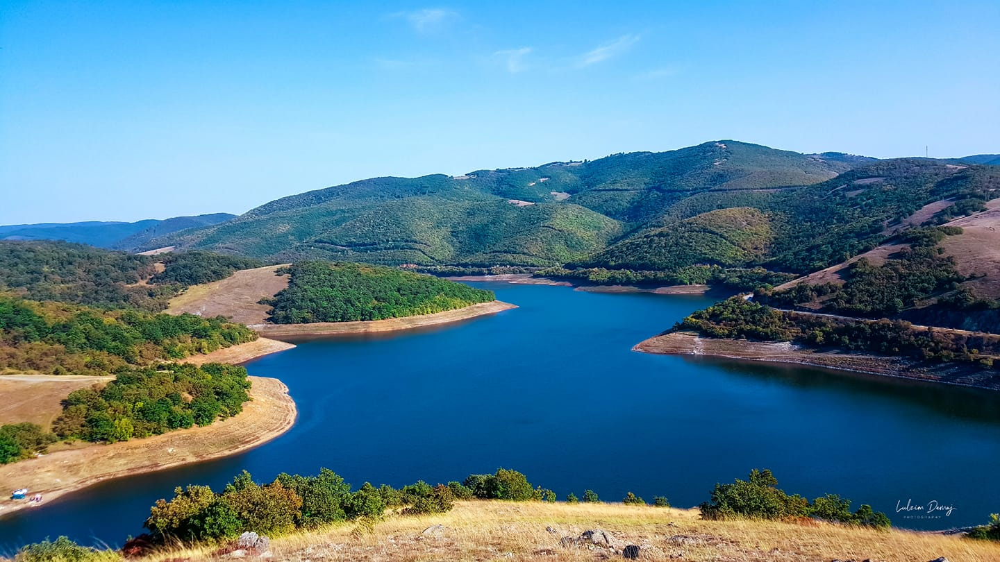
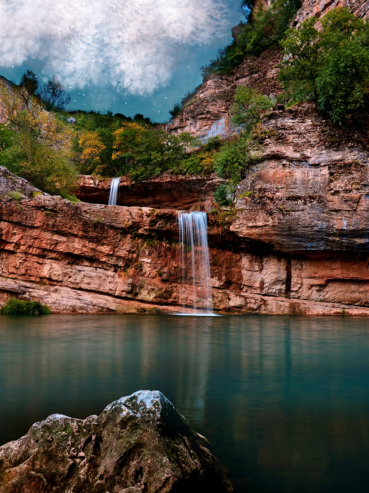

{kind=link}
{kind=link}
There’s nothing quite like exploring and taking some photos of hiking the Kosovo mountains in winter. Although of the fact that it may be somewhat cold, you will love it, and you’ll get the opportunity to finish the day with a hot chocolate by the fire. Sounds like a really sweet approach to spend a winter weekend
| Stunning views of the Mountains |
|||
|---|---|---|---|
 |
RugovaOne of the top Kosovo attractions for nature lovers is Rugova Canyon. There’s plenty of outdoor recreation in this area, from hiking to rock climbing and speleology. A major attraction is a so-called “iron trail,” which is the only one in the Balkans. Other highlights include a few waterfalls and the Gryka e Madhe Cave Read more |
 |
DriniWhite Drin River is a river situated in the west side of Kosovo. he natural beauty of the "White Drin Waterfalls" undoubtedly make this place a great tourist attraction in Kosovo. The springs of the Drin River make the village of Radavc a popular destination for excursions. The wild natural game of the White Drin when observed will leave great impression. Read more |
|  |
Sharr MountainsThe Sharr Mountains National Park has in recent years become one of the most important conservation areas in the Balkans. harr Mountains, form a mountain range in the Balkans that extends from Kosovo and the northwest of North Macedonia to northeastern Albania. The section in Kosovo is a national park, and the section in North Macedonia became a national park on 30 June 2021. Read more |
 |
Batlava LakeRefers to both a lake and resort located in Kosovo.Batllava Lake is one of the biggest lakes in Kosova located in the eastern part of Kosova. It is fed by the Batlava River. The lake has an area of 3.27 km² and a maximum depth of 48 meters.It serves as the main source of drinking water for the territory of Prishtina and Besiana (Podujeva), and is one of the most popular touristic destinations for Kosovars. Read more |
|  |
Badovc LakeIs an artificial reservoirs on the river "Gračanka" two kilometers above Graçanica, Kosovo, built in 1963–1966 in order to supply city of Pristina with water. The dam height of 52 m, a width of 246 m, was built in Badovac ravine below Androvac mountains, near the mine "Rainwater". Read more |
 |
Mirusha WaterfallsThe Mirusha waterfalls are a series of waterfalls found in the Mirusha Park, in central Kosovo. The waterfalls have, over time, created canyons and caves, which are famous throughout the country. The river has carved a 10 kilometres canyon and created 13 lakes with waterfalls between them Read more |
{kind=link}
{kind=link}
{kind=link}
{kind=link}
{kind=link}
| Lorem, ipsum. | Categories |
|---|---|
 |
Kategoria1 Kategoria1 Kategoria1 Kategoria1 Kategoria1 Kategoria1 Kategoria1 Kategoria1 Kategoria1 |
Link headerKategoria1Kategoria1 Kategoria1 Kategoria1 Kategoria1 Kategoria1 Kategoria1 Kategoria1 Kategoria1 |
|
Link headerKategoria1Kategoria1 Kategoria1 Kategoria1 Kategoria1 Kategoria1 |